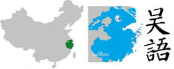

|
||||||||
|
乌镇文化 |
当地方言乌镇方言，是一种吴语方言，属于吴语太湖片苏沪嘉小片。

乌镇文化属吴越文化。乌镇地处江南水乡，乌镇人属江浙民系。乌镇一带本地居民方言可以和上海话、苏州话等无障碍互通。
乌镇分为东栅、南栅、西栅、北栅，其中开放西栅和东栅为旅游景区。由于旅游发展，乌镇西栅原居民已几乎全部迁出祖居地。乌镇东栅、南栅、北栅有当地居民居住生活。
|
|
||||||||||
|
||||||||||
| Copyright ©2019 - 2021 南工院 移动1823 蔡崴版权所有 |